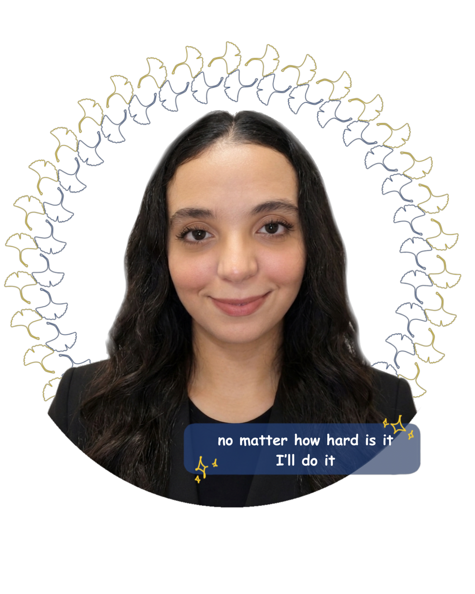

🌸 Life is hard but beautiful

YASMINE MOUAOUINE Ziel: Ausbildung zur IT-System-Elektronikerin
Hallo! Ich heiße Yasmine Mouaouine.
Zurzeit absolviere ich eine Ausbildung als Pflegefachfrau.
Dabei habe ich festgestellt, dass meine Interessen und Stärken besonders im technischen Bereich liegen.
Deshalb beschäftige ich mich in meiner Freizeit intensiv mit Informatik, Computern und der Webentwicklung.
Durch das selbstständige Lernen und die Erstellung eigener Projekte habe ich entdeckt, wie viel Freude es mir bereitet,
technische Probleme zu lösen und neue Systeme zu verstehen.
Ich lerne schnell, arbeite verantwortungsbewusst und gebe nicht auf.
Mein Ziel ist es, eine Ausbildung als IT-System-Elektronikerin zu absolvieren und meine Motivation,
mein technisches Interesse und meine Lernbereitschaft in diesem Beruf einzubringen.
Diese Website habe ich selbst erstellt, um meine ersten Kenntnisse in HTML und CSS praktisch anzuwenden.
Dieses Portfolio wurde innerhalb weniger Wochen nach Beginn meines Selbststudiums erstellt.
• 2021 – Schulabschluss
• 2024 – 1 jahr Studium der Wirtschaftswissenschaften
• 2023 – Beginn des Deutschlernens
• 2025 – Beginn der Ausbildung zur Pflegefachfrau
• 06.2026 – Selbststandiges Erlernen von HTMLL, CSS und JavaScript
• Zukunft – Ausbildung im Bereich Softwareentwicklung
📧 Yasmine.mouaouine1@gmail.com
📱 0176 25003545